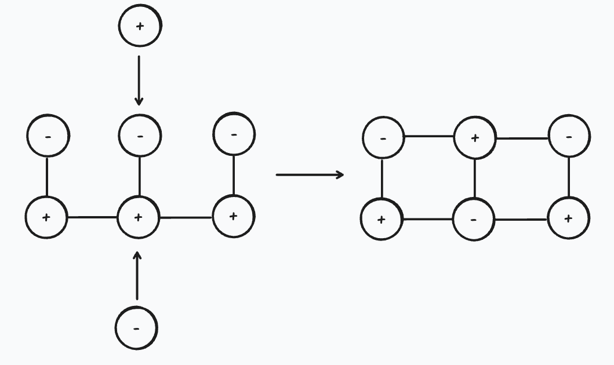

Публичный абстракт · различия / замыкание / материальная память
От различий к различимости
Как контакт становится памятью, а устойчивое замыкание — формой в минимальном ненейронном носителе
Исходное утверждение
Эта работа начинается с физического предположения: до готового объекта есть различия — способы, которыми одно возможное состояние может иначе изменить другое. Различия существуют до контакта, при котором способны стать различимыми. Поэтому отсутствие различимости в данном контакте не означает отсутствия различий: этот контакт ещё не сделал их общей физической судьбой.
Частица, тело или материальная форма рассматриваются как устойчивое замыкание различий: не окончательный кирпич мира и не граф связей, а временно устойчивый баланс взаимно восполняющих различий. Когда следующий контакт встречает такое замыкание как одно целое, оно становится различимостью своего масштаба и новым различием для следующего замыкания.
Контакт рождает различимость
Различия становятся различимостью, когда встреча приобретает физическое следствие: замена одной истории другой меняет распределение последующего контакта. D+ выражает наибольшую такую будущую разность среди допустимых продолжений. Один слепой зонд не устанавливает эквивалентность во всех будущих контактах.
Измерение поэтому является контактом, а не внешней фотографией. Оно участвует в том, какие различия замкнутся в зарегистрированный исход; результат принадлежит совместному продолжению системы и прибора. Тот же критерий определяет память: прошлое существует физически, когда удержанное изменение меняет возможное будущее.
Точный причинный механизм · повторный вход идёт через тот же изменённый носитель
D+ — внешний свидетель изменившегося будущего; он не выбирает путь.
От контакта к форме
Память — это изменившееся будущее, которое несёт само изменённое тело.

- Различия существуют до контакта, при котором способны стать различимыми.
- Контакт замыкает различия в общее физическое следствие.
- Устойчивое замыкание — различимость одного масштаба.
- Действуя как целое, оно становится различием следующего масштаба.
- Повреждение открывает недостаток; новое замыкание восстанавливает, меняет, разделяет или схлопывает форму.